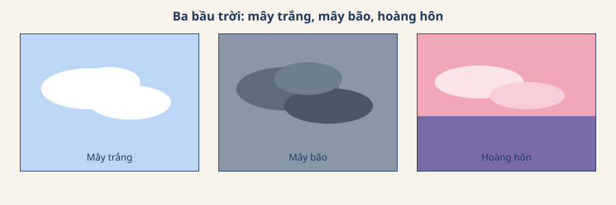

Vẽ mây và bầu trời: mây trắng, mây bão, hoàng hôn
Tác giả: Ruler
Bạn đã biết loang màu ướt trên ướt trong bài "Kỹ thuật loang màu (wet-on-wet): màu chảy, mép mềm, không vệt" và vẽ trên giấy khô trong bài "Vẽ trên giấy khô (wet-on-dry): nét sắc, chồng lớp, chi tiết". Bầu trời là nơi hai kỹ thuật đó gặp nhau: bạn vẽ bầu trời ướt trên ướt, rồi lấy màu ra để tạo mây. Bài này dạy bạn vẽ ba loại bầu trời trong một buổi: mây trắng ngày nắng, mây bão và mây hoàng hôn. Mỗi bức chỉ cần một tờ giấy nhỏ, ba tuýp màu và một miếng khăn giấy.
Mây không phải tô lên, mà là lấy ra
Bạn không vẽ mây bằng màu trắng. Mây là giấy trắng lộ ra, giống như vùng trắng trong bài "Chữa vùng trắng đã mất: lấy lại điểm sáng khi lỡ tô mất". Bạn tô bầu trời xanh lên giấy, rồi lấy màu ra ở chỗ muốn làm mây. Margaret Whitfield viết trên Breathly rằng bạn không vẽ mây lên giấy, bạn lấy mây ra khỏi bầu trời đã tô: phần trắng là giấy trần lộ ra, và miếng khăn giấy là dụng cụ quan trọng nhất của bạn.

Sơ đồ minh họa tự vẽ — không phải ảnh chụp tranh thật. Ba ô bầu trời: mây trắng trên nền xanh nhạt, mây bão xám đậm, mây hoàng hôn hồng và tím.
Marcus Reed viết trên Watercolor Daily rằng phần sáng nhất của đám mây là giấy trần, dù là giấy bạn đã chừa lại hay màu bạn đã lấy ra, vì màu nước không có màu trắng đục nào sáng như giấy. Vì vậy bạn đừng mua thêm tuýp màu trắng cho bài này. Ba tuýp màu đủ cho cả ba bầu trời là xanh ultramarine (PB29), nâu đất (PBr7) và hồng quinacridone (PV19). Bạn pha màu xám cho bóng mây từ xanh ultramarine và một chút nâu đất, không cần tuýp màu xám riêng.
Chuẩn bị: giấy, cọ, độ nghiêng và độ ướt
Bạn dùng giấy màu nước 300 gsm, cold press, khổ nhỏ, dán băng dính giấy quanh mép hoặc dùng block dán 4 cạnh. Bạn kê đầu trên của bảng lên một cuốn sách để mặt giấy nghiêng khoảng 15 độ, giống như khi tô wash phẳng. Bạn cần một cọ dẹt lớn hoặc cọ tròn cỡ 12 cho bầu trời, một cọ tròn nhỏ hơn cho bóng mây, và một tờ khăn giấy xé làm bốn.
Điều quan trọng nhất của bài này là đọc độ ướt của giấy. Marcus Reed viết rằng với mây, chỉ có một giai đoạn khô quan trọng nhất: độ bóng mờ, gọi là sheen. Giấy ướt sũng và bóng loáng như vũng nước sẽ làm màu xanh chảy ngược lại vào chỗ bạn vừa lấy ra. Giấy đã khô mờ sẽ làm mép mây cứng. Bạn làm việc trong khoảng hẹp giữa hai trạng thái đó: giấy còn bóng mờ đều, không còn vũng nước.
Hannah Mercer viết trên ArtTools rằng bạn kiểm tra độ ướt bằng cách nghiêng nhẹ tờ giấy: nếu nước chảy thành dòng thì giấy còn quá ướt; nếu bề mặt trông mờ nhưng bạn đặt mu bàn tay cách giấy khoảng một ngón tay mà vẫn cảm thấy mát thì vừa đủ. Bạn học cách đọc độ ướt bằng tay, không học bằng sách, và bạn sẽ làm hỏng vài bầu trời trước khi cảm được thời điểm đúng. Điều đó bình thường.
Bầu trời 1: mây trắng ngày nắng
Bạn làm theo 6 bước của Marcus Reed, mất khoảng 20 phút chưa kể thời gian khô.
Bước 1: dán giấy, nghiêng bảng, lên kế hoạch. Bạn dán giấy và nghiêng bảng. Bạn không vẽ phác thảo đậm. Nếu cần mốc, bạn chấm nhẹ bằng bút chì hai hoặc ba đám mây. Bạn quyết định ánh sáng đến từ hướng nào: mây sáng nhất ở mặt trên, gần nguồn sáng.
Bước 2: làm ướt bầu trời. Bạn quét nước sạch lên toàn bộ vùng trời bằng cọ lớn, quét ngang từng lượt. Bạn dừng khi giấy có độ bóng mờ đều. Nếu nước đọng thành vũng ở mép dưới của bảng nghiêng, bạn đã cho quá nhiều nước, bạn thấm bớt bằng cọ đã vắt khô.
Bước 3: tô màu xanh. Bạn pha một vũng xanh ultramarine loãng hơn bạn nghĩ cần. Bạn tô từ trên xuống, đậm nhất ở phía trên và nhạt dần khi xuống gần đường chân trời, vì bầu trời thật nhạt và ấm dần về phía chân trời. Bạn chừa vài khoảng trống. Bạn nhớ màu nước khô xong nhạt hơn lúc ướt, nên bạn pha đậm hơn kết quả bạn muốn một chút.
Bước 4: lấy mây ra. Khi độ bóng mờ còn nhìn thấy, bạn ấn một miếng khăn giấy đã vò nhàu vào chỗ màu xanh nơi muốn có mây. Bạn không chà. Bạn ấn, nhấc lên, rồi xoay khăn giấy sang mặt sạch trước mỗi lần ấn, nếu không khăn giấy sẽ trả màu xanh trở lại giấy. Bạn tạo hình mây dày ở phía trên và hẹp dần ở phía dưới.
Bước 5: thêm bóng mây. Bạn pha màu xám từ xanh ultramarine và một chút nâu đất. Bạn chạm màu xám vào mặt dưới của mỗi đám mây bằng cọ nhỏ, và để màu tự loang lên trên trong giấy còn ẩm. Màu xám phải nhạt hơn bầu trời phía trên nó, với mép nhạt dần vào phần trắng. Nâu và xanh là hai màu gần như đối nhau trên vòng màu, nên chúng triệt nhau thành màu xám sạch, không bị bẩn.
Bước 6: để khô phẳng rồi gỡ băng dính. Bạn đặt bảng nằm phẳng và để yên cho tới khi giấy khô hẳn và phẳng lại. Bạn bóc băng dính chậm, kéo theo góc thấp. Nếu một đám mây cần viền sắc, bạn tô một nét xám mỏng dọc mép dưới của nó trên giấy đã khô.
Bạn có ba đám mây cùng kích cỡ thì trông như con dấu đóng lặp lại. Bạn làm một đám lớn, một đám vừa và một đám nhỏ, và cho hai đám chồng lên nhau một chút. Bạn giữ ít nhất một mép mây rõ nét, thường là mép dưới có bóng, vì mây mà mọi mép đều mềm thì trông như sương mù.
Bầu trời 2: mây bão
Bầu trời bão bắt đầu từ cùng một bầu trời ướt, chỉ khác cách chọn màu. Bạn tô một lớp bầu trời nhạt bằng xanh ultramarine. Khi giấy còn ướt, bạn chấm một hỗn hợp đậm hơn gồm xanh ultramarine và nâu đất vào nửa trên của bầu trời, rồi nghiêng bảng để màu đậm lan xuống dưới. Bạn chừa một dải sáng hơn gần đường chân trời. Hỗn hợp càng đậm thì mây càng tối, nên bạn thử độ đậm trên giấy nháp trước.
Hannah Mercer viết rằng mây bão dùng màu xám Payne cho phần tối nhất. Bạn có thể dùng màu xám Payne trong hộp màu 12 màu của mình cho bước này, nhưng bạn vẫn pha màu xám từ xanh ultramarine và nâu đất cho phần lớn đám mây, vì màu xám pha từ hai màu trông sạch hơn màu xám tuýp dùng một mình.
Bạn đừng tô lại nhiều lần lên mây bão đang khô dở. Mỗi lần chạm vào lớp wash đang khô dở, bạn tạo một vệt loang hình bông hoa với viền tối, gọi là bloom. Bạn tô mây bão trong hai hoặc ba lượt rồi dừng lại, để nước tự làm phần còn lại.
Bầu trời 3: mây hoàng hôn
Bạn làm ướt giấy, rồi chạy một dải hồng quinacridone nhạt ngang giữa bầu trời và một dải xanh mỏng ở phía trên. Bạn để hai màu gặp nhau và hòa vào nhau. Bạn lấy mây ra qua lớp hồng bằng khăn giấy, giống như ở bầu trời mây trắng. Màu hồng và màu xanh trộn vào nhau thành màu tím ở chỗ chúng chồng lên, đó chính là dải hoàng hôn trong bầu trời thật.
Bài "Phong cảnh nhỏ: núi, biển, trăng — vẽ từ xa đến gần" đã dùng đúng thứ tự này cho biển hoàng hôn: vàng cho gần chân trời, cam ở trên, hồng và tím ở trên cùng, rồi đợi khô hẳn trước khi vẽ mặt biển hay mặt đất bên dưới. Trong bài đó, bạn vẽ trời trước, biển sau, đường chân trời vẽ cuối cùng bằng nét mỏng.
Bạn đừng tô màu hồng quá đậm. Màu hoàng hôn đẹp vì nhạt và trong, không vì đậm. Bạn pha màu hồng loãng như nước có pha màu, thử trên giấy nháp trước, rồi mới tô lên tranh.
Ba cách tạo mây và khi nào dùng cách nào
Ngoài cách lấy màu ra bằng khăn giấy, còn hai cách khác tạo mây, và màu bạn chọn quyết định cách nào dùng được.
Cách 1: lấy màu ra khỏi lớp wash còn ẩm. Bạn thấm màu xanh bằng khăn giấy. Cách này cho mây trắng mềm, mây trắng bồng bềnh. Cách này chỉ dùng được với màu không bám màu, vì màu bám màu khó lấy ra. Marcus Reed viết rằng xanh phthalo (PB15:3) là màu bám màu mạnh, nên đám mây lấy ra trong bầu trời xanh phthalo chỉ để lại vệt xanh nhạt thay vì trắng. Xanh ultramarine của hãng Daniel Smith được xếp là bám màu trung bình, nên mây lấy ra trong đó mềm nhưng không trắng tinh. Muốn trắng sáng hơn, bạn vẽ vòng qua phần trắng thay vì lấy ra.
Cách 2: vẽ vòng qua phần trắng. Bạn làm ướt giấy hoặc tô màu xanh vòng quanh một hình mây và chừa khoảng trống. Cách này cho mây có viền rõ, mây trắng bồng bềnh với đáy phẳng. Cách này dùng được với mọi màu xanh, và bạn thêm keo chặn màu cho những khoảng trắng nhỏ.
Cách 3: chấm màu tối vào bầu trời ướt. Bạn chạm màu xám hoặc xanh đậm vào bầu trời ướt. Cách này cho mây bão nặng và tối. Màu có hạt lắng cho kết cấu lốm đốm, hợp với mây bão.
Bạn tập cả ba cách trên cùng một tờ giấy nháp, mỗi cách một ô. Bạn sẽ thấy ngay cách nào hợp với tay mình nhất.
Lỗi thường gặp
Mây có mép cứng ở mọi phía. Giấy đã khô trước khi bạn lấy màu ra. Bạn làm nhanh hơn, hoặc làm ẩm lại bầu trời bằng cọ sạch mềm trong một phút rồi lấy lại.
Màu xanh chảy ngược vào đám mây vừa lấy ra. Giấy còn quá ướt. Bạn đợi cho độ bóng loáng đổi thành độ bóng mờ mỏng rồi mới lấy lại. Bạn thấm bằng khăn giấy sạch và xoay khăn giữa các lần ấn.
Màu xám bị bẩn. Màu xám pha từ ba hoặc bốn màu sẽ thành bùn. Bạn chỉ dùng hai màu: một màu xanh và một màu nâu.
Mây trông như bông gòn. Hình mây tròn đều, cùng kích cỡ và không có bóng. Bạn thêm bóng ở mặt dưới và làm đáy mây phẳng hơn.
Bầu trời khô xong quá nhạt. Màu nước nhạt đi khi khô. Bạn pha bầu trời đậm hơn kết quả cuối cùng một chút.
Giấy cong vênh. Bầu trời ướt nặng trên giấy mỏng sẽ gợn sóng. Bạn dùng giấy cotton 300 gsm hoặc căng giấy trước khi vẽ.
Bạn đừng sửa bầu trời đang khô dở. Một bầu trời trông lộn xộn khi còn ướt thường khô xong lại ổn. Bạn chạm vào lớp wash nửa khô thì tạo vệt loang. Bạn tô xong thì đi chỗ khác, để giấy khô hẳn rồi mới nhìn lại.
Bài tập: ba bầu trời trong một buổi
Bạn lấy ba tờ giấy nhỏ, mỗi tờ một bầu trời: mây trắng, mây bão, hoàng hôn. Bạn dùng cùng ba tuýp màu cho cả ba tờ. Bạn đặt hẹn giờ 20 phút cho mỗi tờ, không tính thời gian khô. Sau khi cả ba khô, bạn đặt cạnh nhau và tự hỏi: bầu trời nào có mây trắng sáng nhất, bầu trời nào có bóng mây rõ nhất, bầu trời nào bạn muốn vẽ lại nhất. Bạn giữ lại tờ bạn thích nhất và dán vào sổ vẽ.
Bài tập này dùng đúng kỹ thuật lấy màu ra của bài "Chữa vùng trắng đã mất: lấy lại điểm sáng khi lỡ tô mất", nhưng ở đây bạn lấy màu ra có chủ đích ngay từ đầu, không phải để chữa lỗi. Khi bạn vẽ xong ba bầu trời, bạn đã biết cách đọc độ ướt của giấy, và đó là kỹ năng dùng lại trong mọi bài phong cảnh sau này.
Kết luận
Mây không phải tô lên mà là lấy ra: bạn tô bầu trời xanh, lấy màu ra bằng khăn giấy khi giấy còn bóng mờ, rồi chạm màu xám pha từ xanh ultramarine và nâu đất vào mặt dưới của mây. Ba loại bầu trời chỉ khác nhau ở cách chọn màu và thời điểm chạm màu. Bạn tập ba bầu trời trong một buổi, giữ lại tờ đẹp nhất, và nhớ quy tắc quan trọng nhất: đừng chạm vào bầu trời đang khô dở.
Bài tiếp theo, bài "Vẽ cây và tán lá: cây lá rộng, cây thông và rừng thông", dùng cùng kỹ thuật ướt trên ướt này cho tán lá, rồi thêm cọ khô cho vỏ cây và lá kim.
Nguồn tham khảo
- Marcus Reed, Watercolor Daily, "How to Paint Clouds in Watercolor: 6 Steps for Soft Skies" — 6 bước vẽ mây trắng (dán giấy, nghiêng 15 độ, làm ướt tới độ bóng mờ, tô xanh ultramarine đậm trên nhạt dưới, lấy mây bằng khăn giấy vò nhàu, bóng mây xám từ ultramarine + nâu đất, để khô phẳng); 3 tuýp màu PB29/PBr7/PV19; mây bão chấm hỗn hợp đậm vào nửa trên; mây hoàng hôn hồng quinacridone + xanh; màu bám màu khó lấy ra (phthalo PB15:3); lỗi mép cứng, màu chảy ngược, xám bẩn, mây như bông gòn, giấy cong vênh (truy cập 23/11/2026): https://www.watercolordaily.com/blog/how-to-paint-clouds-in-watercolor
- Hannah Mercer, ArtTools, "How to Paint a Cloudy Sky in Watercolor: Free Step-by-Step Tutorial" — giấy cotton 300 gsm cold press; cọ mop cỡ 12, cọ tròn cỡ 8–10, cọ rigger cỡ 2; 4 màu ultramarine, cerulean, nâu đất, xám Payne; mây trắng bồng bềnh (nâng ướt bằng cọ sạch nước), mây ti (giấy gần khô, cọ rigger, nét dài theo chiều gió), mây tầng (wash xám Payne + ultramarine, nghiêng bảng, thấm khăn giấy); kiểm tra độ ướt bằng mu bàn tay; 3 cách lấy màu (ướt, ẩm, khô); lỗi màu bẩn, mép cứng, mây rời rạc, tô quá tay, dùng quá nhiều màu (truy cập 23/11/2026): https://www.arttools.com/how-to-paint-a-cloudy-sky-in-watercolor-free-step-/
- Margaret Whitfield, Breathly, "How to Paint Clouds in Watercolor Easy Beginner Tutorial" — không vẽ mây lên mà lấy mây ra; giấy khoảng 300 gsm; 6 bước trong khoảng 15 phút (đường chân trời thấp, làm ướt bầu trời, tô xanh từ trên xuống, lấy mây bằng khăn giấy khô ấn nhẹ không chà, bóng xám hoặc tím nhạt ở mặt dưới, để khô phẳng); thời điểm lấy mây là khi độ bóng vừa nhạt đi; lỗi mép cứng, màu chảy ngược, mây phẳng vì thiếu bóng (truy cập 23/11/2026): https://mybreathly.com/blogs/creative-calm/how-to-paint-clouds-in-watercolor